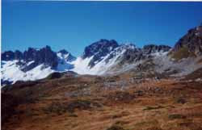
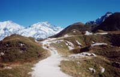

col de la Fenêtre, 2245 m (tour de Roselette)

Départ : col du Joly (1989 m)
Aller : xx km, - 256 m, xx min
Retour : 6,1 km, + 50 et - 1161 m, 129 min
Difficulté : E
Période : juillet - septembre
Remarque : -
Bibliographie : 30 balades autour de St Gervais (balade 30), topo TPMB.
Gagner le lac de Roselette par la route pastorale descendant E. Se diriger vers le téléski de Roselette sous lequel descend un sentier menant au refuge de Roselette. Descendre encore 50 m pour rejoindre le Tour du Beaufortain qu’on suit jusqu’aux chalets des Prés. Juste au-dessus, une sente monte au Plan de la Fenêtre, et rejoint le TPMB. Le col de la Fenêtre est atteint par de bons lacets pierreux.

Descendre W ce sentier TPMB, bien balisé, qui tourne au N sur le replat, franchit un passage schisteux avec un câble et gagne l’arête de Roselette après un beau passage au pied d’une falaise. Regagner le col du Joly en restant sur ce sentier TPMB. Vers 2050, il passe par une jolie zone de gypse, mouvementée.
photo ci-contre : la zone de gypse près du col du Joly ; ci-dessus, le col de la Fenêtre à l'automne (à D)